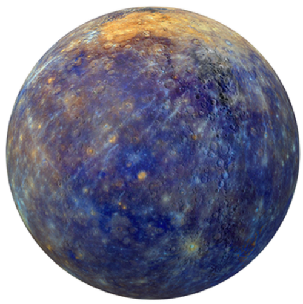
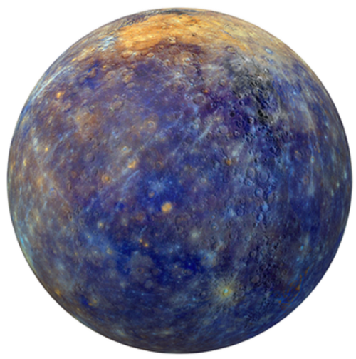

飛奔的水星
水星是太陽系中最小的行星。實際上，木星的3號衛星、土星的6號衛星都比水星大。
小雖小，水星是繞太陽移動最快的行星。它以每秒約47公里的速度繞太陽運行。水星一年只有88個地球日。也就是地球上的一年，就超過水星的4年。
由於缺乏大氣層，又最靠近太陽，水星是太陽系溫差最大的行星，白天可達427℃，夜間降到 -183℃，日夜溫差高達六百多攝氏度
度日如年的金星
金星的公轉週期是225個地球日，而自轉週期則是243個地球日，也就是說，金星的一天比金星的一年還要長。
太陽系各大行星的自轉方向都相同，金星是唯一一個敢逆向的行星，他的自轉方向是由東向西。所以太陽在金星上是打西邊昇起的，日落則是在東方。
金星大氣層的主要成分是二氧化碳，在溫室效應的幫助下，贏過了離太陽最近的水星，成為太陽系最熱的行星，表面高溫可達攝氏480度。
生命的地球
美麗的奇跡？或是宇宙的巧合？還是上帝的杰作？
地球恰好擁有大氣層的保護、又剛好有不快不慢的自轉周期、離太陽的距離也非常適當（合適的溫度）、表面竟然有大約70%被水覆蓋，是整個太陽系中唯一一顆表面有液態水的行星。
這些，都是孕育生命的重要條件。
有藍色日落的火星
火星大氣中充滿了塵埃顆粒。日落時，受這些顆粒影響，只有藍光能通過，形成了藍色的日落。
但如果從地球看去，火星的顏色極具特點，由於他表面佈滿鐵質，成了一顆紅色星球。
火星上還有全太陽系最高的山，喜馬拉雅山脈放在火星上就是一座小山丘。火星上的奧林帕斯山高約兩萬三千米，幾乎是珠穆朗瑪峰的3倍，而奧林帕斯山是一座火山，寬約600公里，比整個台灣長1.5倍。
古代火星被河流和湖泊所覆蓋，與地球非常相似。然而，大約三十億年前，這顆行星失去了大部分大氣層並幹涸了。
保護弟妹的木星
木星是最大的行星。體積比其他行星的總和還要大得多。一顆木星相當於1300個地球。而木星的質量是其他所有行星質量總和的兩倍多。
木星也是自轉速度最快的行星。在木星上，不到10個小時就過完一天了。
木星的大紅斑其實是其南半球的一個風暴，是目前太陽系已知的最大風暴，根據歷史上的觀測記錄，這個風暴至少持續了300多年，它的範圍極大，足以籠罩住2個地球。其風力最高時，曾突破時速644公里。
木星有著強大的重力場，藉以讓很多隕石的軌跡遠離地球，把很多原先會在太陽系內圈造成重大破壞的彗星趕開。所以對地球而言，木星就像重力盾牌，也像在保護地球的粗壯大哥，讓地球避免了許多致命的撞擊，享有幾億年相對平安和寧靜的時期，得以孕育著生命。
可以飄浮的土星
土星是八大行星中密度最低、最輕的行星，如果把土星放在水中，他會像海灘球一樣漂浮起來。
在這顆行星的中心有一個致密的金屬核心。它被液態金屬和一層液態氫包裹；後者逐漸轉變為氣體。土星最外氣體層超過 1,000公里厚。
土星的表面主要是由旋轉的氣體組成。由於沒有固態的表面：如果你試圖在土星表面行走，你會從它的外部下沈，然後承受高溫和高壓。
土星有一個巨大的冰環系統：土星環。主要由數十億個水冰顆粒和微量岩石物質組成。顆粒大小不一，從沙粒小到房屋大的塊狀物都有；有些甚至像山一樣大！
土星有82顆衛星，是太陽系內擁有最大衛星系統的行星。其中最大的衛星是土衛六，又稱為泰坦（Titan），泰坦是整個太陽系中唯一擁有類似地球大氣層的衛星，也是除地球之外，唯一表面有液體的地方。

躺著轉的天王星
這張照片是由航海家２號於1986年拍到，航海家２號在1977年發射，是唯一拜訪過天王星及海王星的太空船。
天王星的大氣呈藍綠色，這是因為其中含有甲烷和高度光化學煙霧，吸收了來自太陽的紅光，讓天王星呈現藍綠色調，而且天王星氣象非常穩定，沒有任何雲彩，更沒有風暴，平淡無奇。
由於缺乏核心的內熱，天王星雖不是離太陽最遠的，卻是全太陽系最冷的行星，最低溫度只有 −224℃。
天王星的最大特徵是自轉的傾斜度很大。一般行星的自轉軸與其公轉面都很接近垂直，唯獨天王星的自轉軸成九十八度的傾斜，幾乎是橫躺著運行。因此，太陽有時整天都照在北極上，而這時的南半球就全天黑暗。
風最大的海王星
海王星繞太陽公轉一周需要大約165個地球年。由于海王星的軸傾斜與地球相似，這顆冰巨行星也有我們在地球上所經歷的季節；只是他的夏天會持續40個地球年。
海王星的甲烷大氣吸收來自太陽的紅光並將藍光反射到太空中。因此，這顆行星擁有鮮豔的藍色。
海王星是全太陽系風速最大的行星：風速達到時速約2100公里。
海王星離太陽最遠，平均溫度約為 -214°C。這顆冰巨行星最熱的地方是它的南極，那裏的溫度大約是 -200°C。
海王星是通過數學計算發現的第一顆行星。1846年，英國數學家約翰·庫奇（John Couch）僅使用數學計算就確定了海王星的位置。經過柏林天文台確認之後，於是將已知行星的數量增加到八顆。
短周期彗星-哈雷
哈雷彗星（Halley）是有名的短周期彗星，每隔76年左右會拜訪地球一趟，是唯一能用肉眼直接看到的短週期彗星。
現代人的一生中，最多只能與他相會兩次，甚至可能只有一次，錯過不再。
右圖是其旅行的軌道。
史上有許多哈雷彗星來訪的記載，譬如《史記·始皇本紀》「始皇七年，彗星先出東方，見北方；五月見西方，十六日」。但過去並不知道這是一顆周期性的彗星。
直到1705年，愛德蒙·哈雷 使用牛頓運動定律計算，再檢視歷史的紀錄後，發現1682年出現的彗星與1531年彼得魯斯、1607年克卜勒觀測的彗星的軌道要素幾乎相同。因此哈雷推斷這三顆彗星是同一顆彗星，週期在75-76年之間。在粗略估計行星引力對彗星攝動後，預測這顆彗星在1758年將會再接近地球。但哈雷於1742年逝世，未能活著看見這顆彗星的回歸。
其他能以肉眼觀察到的彗星有些會更壯觀、更美麗，但可能要數千年才會出現一次。

只讓我們看同一面的月球
月球與地球的平均距離約為38.4萬公里。這一點點距離在天文學的尺度上來說，實在是微不足道的，甚至都不能稱之為距離，但是，就是在這個小到可以忽略不計的距離中，剛好可以把太陽系中其他的七大行星，一顆顆排成一列。
這足以看出，我們這個宇宙是多麼的空曠。
月球過去離地球更近，如果回到45億年前，他在天空中比現在大15倍，而且，他如今仍繼續以每年4公分的速度遠離我們。
由於月球公轉的速度和自轉的速度相同，因此在地球上，我們永遠只能看到月球的同一面。
目前有12個人登上過月球，而他們的腳印會在月球上停留數百萬年，因為月球上沒有風可以抹去這些腳印，也不會下雨或地震。
太陽
如果把整個太陽系所有天體的質量全部加總在一起，其中最重的就是太陽，有多重呢？
太陽一個人就佔整個太陽系總質量的 99.86%
「光」是目前宇宙所有物質中，傳遞速度最快的，在太空中行進的速度為每秒 29萬9,792公里。也就是一秒鐘就將近三十萬公里。
地球赤道一圈約 4萬75公里，光如果繞著地球轉，每秒可以繞 7.5圈。
月球距離地球大約384,400公里，以光速前去的話，只需要1.28秒即可抵達。但如果你不想超速，以開車時速105公里前往月球，約需要155天。
地球與太陽的距離約1.5億公里，所以我們此刻看到的太陽光，其實都是8分19秒之前，從太陽表面出發的光。太陽如果突然爆炸了，我們要等 8分19秒之後才會看到。